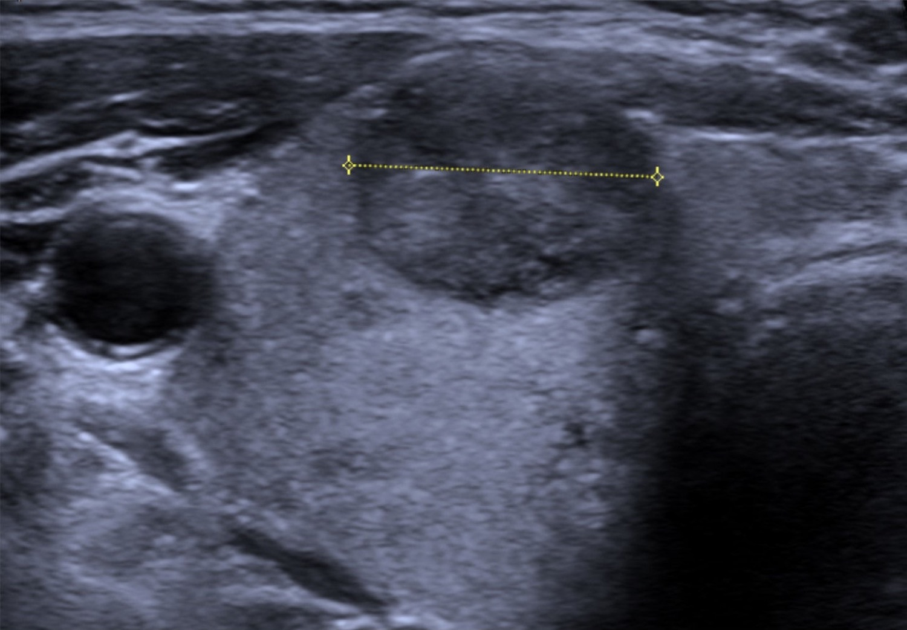

Mulher, 32 anos, completamente assintomática. Num exame de rotina aparece um nódulo de tireoide de 1 cm. Não emagreceu, não tem palpitação, não notou caroço. Só apareceu. A pergunta que abre tudo: o que fazer com esse nódulo?
Uma mulher, um nódulo de 1 cm, duas perguntas
Todo nódulo de tireoide acende duas perguntas
Mulher, 32 anos. Completamente assintomática. Num exame de rotina, aparece um nódulo de tireoide de 1 cm. Ela não sente nada, não emagreceu, não tem palpitação, não notou caroço. O nódulo simplesmente apareceu — como aparece na maioria das vezes, achado de acaso.
A pergunta que abre tudo é simples: o que fazer com esse nódulo? E a resposta começa entendendo que todo nódulo de tireoide levanta duas grandes preocupações, e só duas. A primeira é a funcionalidade: será que esse nódulo produz hormônio por conta própria, um nódulo hiperfuncionante? A segunda é a malignidade: será que isso é câncer?
A ordem não é livre: funcionalidade antes de malignidade
Guarde essas duas perguntas lado a lado, porque a ordem entre elas não é livre. Existe um jeito certo de encadeá-las — e existe a armadilha de inverter. Comece sempre pela funcionalidade. As bancas adoram montar a questão de um jeito que te empurra direto para a pesquisa de câncer, pulando a funcionalidade. Não caia. Tem um motivo clínico forte para resolver a funcionalidade primeiro, e ele fica claro logo na etapa seguinte.
Esta paciente — a mulher de 32 anos — reaparece várias vezes. Cada exame que ela faz, cada decisão, vai construindo o raciocínio do nódulo até o diagnóstico final. Fixe o rosto dela: é por ela que toda a lógica existe.

Toque em Avançar para percorrer o passo a passo.
Inverter a ordem — partir para investigar câncer antes de checar funcionalidade — leva a puncionar nódulos que jamais precisariam de agulha, e a tratar como suspeito um nódulo que é apenas hiperfuncionante e benigno. A ordem economiza procedimento e ansiedade. A Pergunta 1 tem um primeiro exame concreto, e é por ele que tudo começa — um único valor de laboratório.
Quiz — fixação
-
Diante de qualquer nódulo de tireoide, qual deve ser a primeira preocupação a resolver?
Gabarito: B. Começa-se sempre pela funcionalidade — um nódulo hiperfuncionante é, por definição, benigno, e resolver isso pode encerrar a investigação.
Por que cair na A: é a inversão que as bancas induzem; partir para malignidade primeiro é o erro clássico.
-
Todo nódulo de tireoide tem essencialmente duas preocupações: funcionalidade e malignidade.
Verdadeiro. São exatamente essas duas — e nessa ordem.